Date of birth
08.12.1995
 Dwudrzwiowy, dwuosobowy samochód sportowy dla mas mierzy 4630 mm długości, 1933 mm szerokości, zaledwie 1234 mm wysokości przy całkiem pokaźnym rozstawie osi wyrażanym wartością 2723 mm. Jego masa własna na sucho to 1527 kilogramów. Pod maską Za plecami podróżujących znajduje się umieszczony centralnie 6,2-litrowy silnik LT2 V8, wytwarzający moc 497 KM i 630 Nm maksymalnego momentu obrotowego lub w nieco lepszym przypadku – 502 KM i 637 Nm.
Dwudrzwiowy, dwuosobowy samochód sportowy dla mas mierzy 4630 mm długości, 1933 mm szerokości, zaledwie 1234 mm wysokości przy całkiem pokaźnym rozstawie osi wyrażanym wartością 2723 mm. Jego masa własna na sucho to 1527 kilogramów. Pod maską Za plecami podróżujących znajduje się umieszczony centralnie 6,2-litrowy silnik LT2 V8, wytwarzający moc 497 KM i 630 Nm maksymalnego momentu obrotowego lub w nieco lepszym przypadku – 502 KM i 637 Nm.
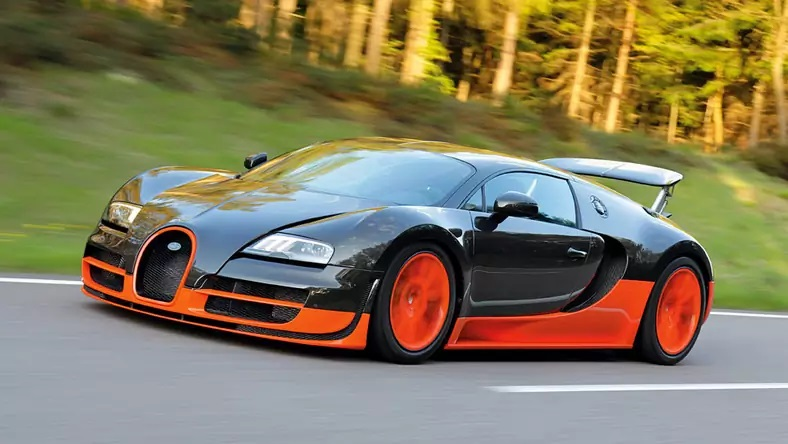
Ogromne wloty powietrza wystające nad dachem, zmieniające stopień wysunięcia w zależności od zapotrzebowania motoru na powietrze, grill w kształcie podkowy, przysadzista sylwetka o krągłych i muskularnych kształtach – to wyróżniki tego modelu. Bardzo często jego nadwozie jest konfigurowane w dwukolorowym schemacie kolorystycznym. Wnętrze Veyrona kipi od luksusu.
Dostępna jest szeroka gama konfiguracji kolorystycznych. Wszystkie elementy obszyte są skórą, a wykończenia wykonane z lekkich stopów. Mimo że nowe Bugatti miało być supersamochodem wybijającym się osiągami ponad wszystkie inne maszyny swojego segmentu, nie zbudowano spartańskiego pojazdu do bicia rekordów, lecz wóz o komforcie na poziomie najlepszych gran turismo. Wyposażenie wnętrza obejmuje radio z odtwarzaczem CD, klimatyzację oraz kilka innych, niezbędnych w samochodach tej klasy urządzeń i udogodnień. Bogato wykończone wnętrze wysokiej klasy nie jest jednak głównym atutem tego samochodu.
Podziw budzi przede wszystkim znakomita jednostka. 16-cylindrowy motor o układzie W, z poczwórnym turbodoładowaniem, czterema zaworami na cylinder i pojemności wynoszącej 8 l, rozwija moc 1001 KM i 1250 Nm momentu obrotowego. Jak się później okazało, podana moc była zaniżona – w rzeczywistości umieszczony centralnie silnik miał 1020 KM. Potężny motor został wyposażony w 3 intercoolery, 3 chłodnice silnika, chłodnicę oleju skrzyni biegów, chłodnicę oleju dyferencjału oraz chłodnicę oleju silnikowego. Napęd przekazywany jest przez sekwencyjną, 7-biegową skrzynię biegów na wszystkie cztery koła. Przekładnia ta projektowana była przez duży zespół inżynierów w ciągu niemal całego okresu konstruowania Veyrona. Problem stanowiło zaprojektowanie skrzyni biegów rodem z Formuły 1, ale będącej w stanie znieść długotrwałe użytkowanie. Szokująca moc szła w parze z szokującymi osiągami. Veyron stał się pierwszym seryjnie produkowanym samochodem, który przekroczył barierę 400 km/h (osiągnął 407 km/h). Nowe Bugatti ustanowiło również rekord przyspieszenia od 0 do 100 km/h. Veyron 16.4 potrzebuje na to zaledwie 2,5 s. Bugatti wprowadziło na rynek wiele odmian specjalnych Veyrona: Pur Sang (5 egzemplarzy) – wersja charakteryzująca się przede wszystkim nadwoziem niepokrytym żadnym kolorem (widać aluminiowe i karbonowe elementy); Fbg Par Hermes – felgi oznaczono literką H, a wnętrze pokryte jest skórą przez firmę Hermes; Sang Noir (15 egzemplarzy) – wersja ze specjalnym czarnym lakierem na całym nadwoziu oraz pomarańczowym wykończeniem wnętrza; Bleu Centenaire – model przedstawiony na setne urodziny marki Bugatti, wykończony od zewnątrz matowym i połyskującym lakierem Bugatti Blue. Oprócz tych wersji specjalnych wprowadzono dwie szczególnie ważne odmiany. Grand Sport to odmiana z nadwoziem typu targa, wprowadzona do produkcji w 2009 roku. Można korzystać z niego na trzy sposoby. Z założonym twardym dachem prędkość maksymalna jest taka jak dla Veyrona coupé. Z otwartym nadwoziem została ona ograniczona do 369 km/h. Z kolei z zamkniętym, płóciennym dachem Veyronem Grand Sport nie można jechać szybciej niż 130 km/h. Ostatnim dziełem Bugatti jest Veyron Super Sport: wersja ze wzmocnionym do 1200 KM i 1600 Nm silnikiem oraz znacznie ulepszoną aerodynamiką. Pozwoliło to na odebranie rekordu prędkości samochodu produkowanego seryjnie amerykańskiemu SSC Ultimate Aero, który przez krótki okres był lepszy od Veyrona 16.4. Super Sport osiągnął 431,072 km/h. Sprzedawane egzemplarze są jednak ograniczone elektronicznie do 415 km/h. Ostatniego Veyrona 16.4 sprzedano w 2011 roku. Do tej pory nie został przedstawiony następca tego modelu. Zakup Veyrona to koszt rzędu 1 400 000 euro.
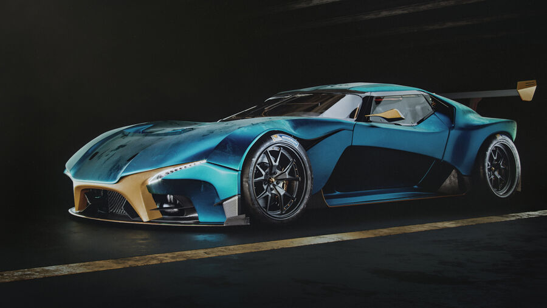 Zamontowany centralnie z przodu silnik RX-Vision to wolnossąca jednostka Wankla Skyactiv-R z 4 wirującymi tłokami.Przy pojemności 2600 cm3 osiąga ona moc 570 KM przy 9000 obr./min i moment obrotowy 540 Nm przy 7500 obr./min.
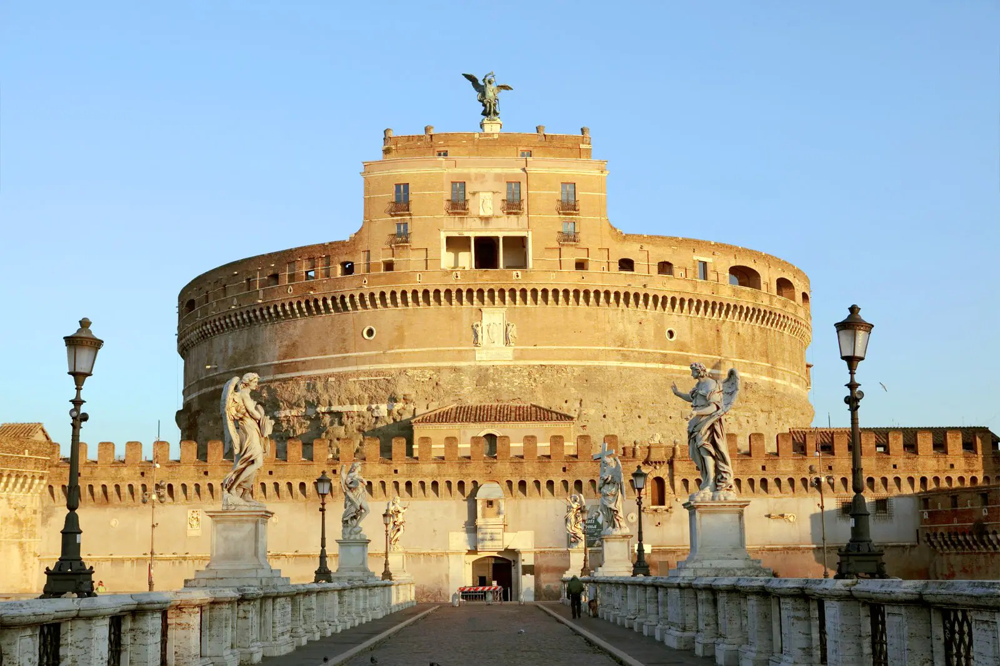
Grobowiec cesarza Hadriana, jego rodziny oraz następców, znajdujący się na prawym brzegu Tybru w Rzymie, w pobliżu Watykanu.
Budowę mauzoleum rozpoczęto za życia Hadriana, ukończono je jednak dopiero za panowania jego następcy Antoninusa Piusa w 139 roku. Usytuowano je na terenie ogrodów Domicji (horti Domitiae). Aby ułatwić komunikację, na wysokości Pola Marsowego przerzucono ośmioprzęsłowy most Pons Aelius. Grobowiec wybudowany został na obłożonej z zewnątrz płytami z marmuru paryjskiego podstawie w kształcie kwadratu o boku 85 m i wysokości ok. 10 m. Na niej posadowiono wzniesione z betonu i wyłożone z zewnątrz trawertynowymi płytami cylindryczne mauzoleum, o średnicy 64 m i oryginalnej wysokości ok. 21 m, nakryte kopułą na której na warstwie ziemi posadzono drzewka cyprysowe. Kopuła ozdobiona była ustawionym na podwyższeniu, wykonanym z brązu posągiem cesarza powożącego kwadrygą. Na krawędzi ścian mauzoleum ustawiono posągi z marmuru. Ściany podstawy ozdobiono fryzem z bukranionów i inskrypcjami wymieniającymi pochowanych w mauzoleum członków rodziny cesarskiej. W mauzoleum pochowano Hadriana i jego żonę Sabinę, Antonina Piusa z żoną Faustyną Starszą, Lucjusza Aeliusza, Lucjusza Werusa, Marka Aureliusza, Septymiusza Sewera, Julię Domnę, Getę i Karakallę.
Wejście do mauzoleum prowadziło przez dromos i rampę zakończoną kwadratowym pomieszczeniem, w niszy którego umieszczono posąg cesarza. Z tego pomieszczenia spiralny korytarz prowadził do komory grobowej o wymiarach 8×8 m. Ściany tego pomieszczenia wyłożono marmurem, a jego nisze przeznaczone były na urny z prochami zmarłych.
Budowla funkcję mauzoleum pełniła do 271 roku, kiedy została włączona w system murów obronnych Rzymu. W czasach Teodoryka zamieniono ją na więzienie. Na początku V wieku, za panowania Honoriusza, została przebudowana na fortecę. Podczas oblężenia Rzymu przez Gotów w 537 roku zniszczone zostały marmurowe rzeźby wieńczące mauzoleum (obrońcy obrzucali nimi szturmujących wrogów).
Pod koniec VI wieku papież Grzegorz I Wielki przemianował budowlę na Zamek św. Anioła, aby upamiętnić ukazanie się podczas zarazy, nad mauzoleum anioła chowającego miecz na znak końca epidemii, którą interpretowano jako gniew Boży. W 608 roku papież Bonifacy IV na szczycie budynku wzniósł kaplicę Świętego Anioła w Niebie.
W X wieku zamek stał się własnością rodziny Krescencjuszy, którzy ufortyfikowali go i wybudowali na szczycie wieżę. W okresie średniowiecza i renesansu Zamek św. Anioła służył papieżom jako więzienie i twierdza, co wiązało się z licznymi przebudowami. W 1277 roku papież Mikołaj III połączył zamek z Watykanem za pomocą korytarza Passetto di Borgo, istniejącego do dziś. W 1453 roku na jego murach powieszony został Stefano Porcari, zaś podczas Sacco di Roma w 1527 roku schronił się w nim papież Klemens VII.
Od 1752 roku budynek zdobi rzeźba przedstawiająca anioła z mieczem. Od 1933 roku do czasów obecnych znajduje się w nim watykańskie muzeum średniowiecznej broni.
 Amfiteatr w Rzymie, wzniesiony w latach 70-72 do 80 n.e. przez Wespazjana i Tytusa – cesarzy z dynastii Flawiuszów.
Amfiteatr w Rzymie, wzniesiony w latach 70-72 do 80 n.e. przez Wespazjana i Tytusa – cesarzy z dynastii Flawiuszów.
Jest to duża, eliptyczna budowla o długości 188 m i szerokości 156 m, obwodzie 524 m, wysokości 48,5 m, z pojemną widownią, która mogła pomieścić od 45 do 50 tysięcy widzów; z galeriami komunikacyjnymi oraz areną z systemem podziemnych korytarzy. W czterokondygnacyjnym podziale zewnętrznym zastosowano spiętrzenie porządków (najniższa kondygnacja w porządku toskańskim, druga w jońskim, trzecia w korynckim). Trzy niższe kondygnacje związane są z konstrukcyjnym układem arkad, czwarta, najwyższa została zaopatrzona tylko w małe okna. Od strony wewnętrznej budowla jest pięciokondygnacyjna. Cztery kondygnacje zbudowano jako układ pomieszczeń wydzielonych pomiędzy filarami, ścianami, ze sklepieniami kolebkowymi i krzyżowymi. Umieszczono tam bufety, szatnie, natryski, pomieszczenia dla gladiatorów, klatki dla zwierząt, korytarze. Wokół areny wzniesione było podium. Do Koloseum prowadziło 80 ponumerowanych wejść (zachowały się oznaczenia wejść od nr XXIII do LIV), które zapewniały szybkie (przez ok. 6 minut) opuszczenie widowni przez widzów (jednak taką możliwość mieli tylko widzowie z dolnych i środkowych rzędów). Istniała też możliwość przykrycia całej widowni specjalną osłoną (velarium) w deszczowe lub bardzo słoneczne dni.
Odbywały się w nim m.in. walki gladiatorów, naumachie, polowania na dzikie zwierzęta. Tradycja mówi, iż w Koloseum mordowano chrześcijan, co upamiętniono krzyżem wewnątrz budowli. Od połowy XVIII wieku Koloseum jest otoczone opieką jako miejsce męczeństwa pierwszych chrześcijan, wcześniej pozyskiwano z niego bloki kamienne jako materiał budowlany. Nazwa Koloseum została nadana we wczesnym średniowieczu od znajdującego się w pobliżu budowli ogromnego (gr. „kolossos”) posągu Nerona przedstawionego jako Apollo.
W 445 zostało poważnie uszkodzone przez trzęsienie ziemi.
W 528 odbyły się tu ostatnie igrzyska.
Pod koniec VI wieku wewnątrz amfiteatru wybudowano mały kościół, arenę przekształcono w cmentarz.
Około 1200 rodzina Frangipani przejęła Koloseum i ufortyfikowała je, używając jako zamku.
W 1349 w wyniku trzęsienia ziemi zawaliła się zewnętrzna część południowej ściany.
W 1744 zostało ogłoszone miejscem męczeństwa chrześcijan. Zaprzestano eksploatować go w roli kamieniołomu.
Od II poł. XVIII wieku w Wielki Piątek odbywa się tutaj droga krzyżowa pod przewodnictwem papieża.
7 lipca 2007 obiekt został ogłoszony jednym z siedmiu nowych cudów świata.
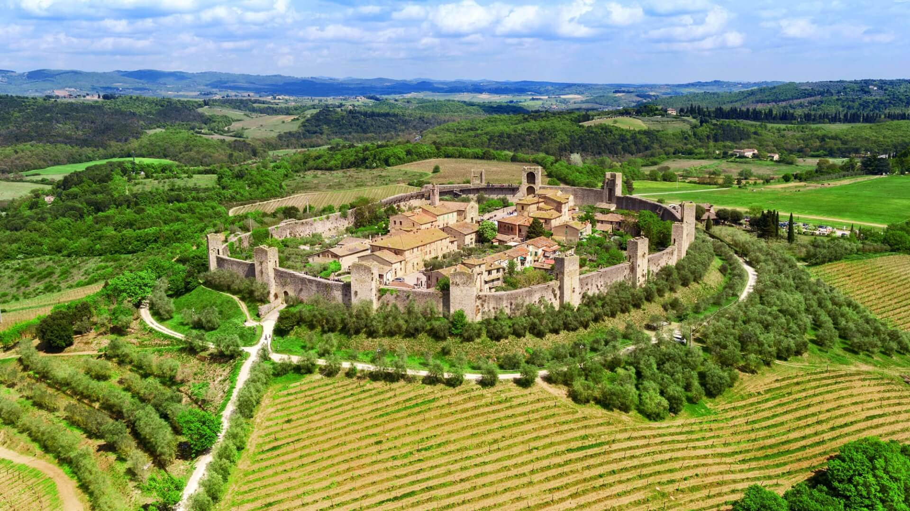
Miejscowość i gmina we Włoszech, w regionie Toskania, w prowincji Siena.
Miejscowość została założona w 1203, a po roku 1213 ufortyfikowana murami o długości 570 metrów z 14 wieżami obronnymi, które zbudowało miasto Siena w celu zabezpieczenia się przed atakiem Florencji, z którą prowadziła wówczas wojnę. Zamek w Monteriggioni został zbudowany podczas panowania „podesty” Guelfo da Porcari w latach 1214–1219. Teren pod zamek został zakupiony przez rodzinę szlachecką da Staggia i był siedzibą antycznej faktorii Longobarda. Sama konstrukcja zamku przebiegała zgodnie z panującym standardami w Republice Sieny i miała pełnić głównie funkcję obronną. Wieża znajdująca się na Monte Ala zwrócona była na antyczny trakt Francigena tak, aby zapewniać stały podgląd okolicy i wzgórz dell’Elsa znajdujących się w pobliżu zamku. Zbudowanie zamku od podstaw było efektem nowoczesnej polityki republiki Sieny, która dotychczas zdobywała już istniejące zamki i prowincje, takie jak Quercegrossa. Mury zamku są zbudowane w całkowitej harmonii z otaczającymi wzgórzami, tak by były jak najbardziej stabilne. Cały zamek otoczony jest charakterystycznymi dla tego okresu carbonariami (węglarniami), które służyły do wytwarzania węgla z pozyskiwanych surowców naturalnych. Dzięki temu zamek w trakcie oblężenia był stale zaopatrzony w węgiel, co znacznie ułatwiało obronę przed inwazjami. Często w trakcie oblężeń zostawały one podpalane. Twierdza Monteriggioni została zdobyta przez Florencję na skutek zdrady komendanta dopiero w 1554 roku.
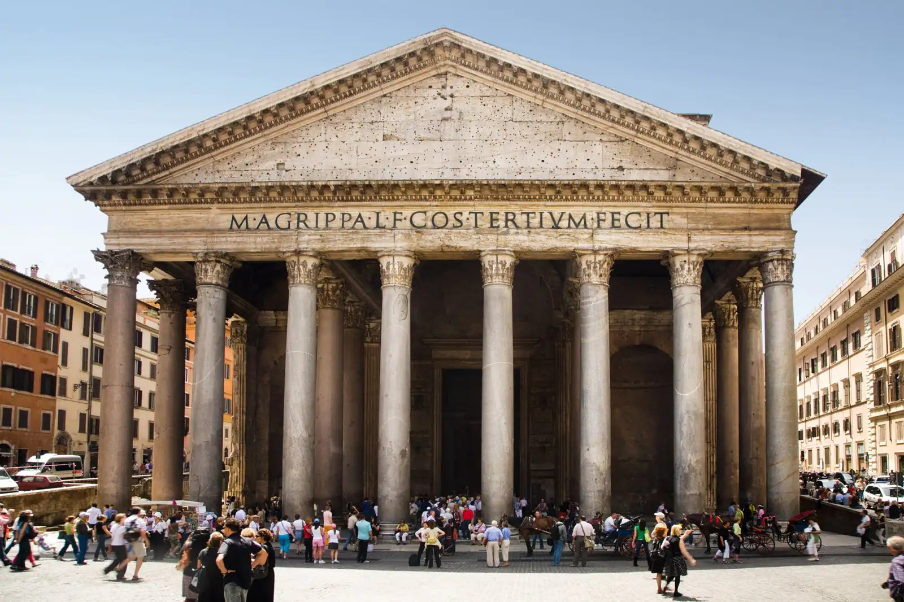
Okrągła świątynia na Polu Marsowym, ufundowana przez cesarza Hadriana w roku 125 na miejscu wcześniejszej z 27 r. p.n.e., zniszczonej w pożarze w 64 r. n.e.
Budową gmachu kierował Apollodoros, zesłany, po czym prawdopodobnie stracony później przez cesarza. Panteon poświęcony był bóstwom planetarnym oraz ówcześnie panującemu cesarzowi, a od VII wieku Panteon jest użytkowany jako katolicki kościół pw. Santa Maria ad Martyres (pol. Najświętszej Marii Panny od Męczenników).
Jest jedną z najlepiej zachowanych budowli z czasów starożytnego Rzymu. 42-metrowa kopuła Santa Maria del Fiore Filippo Bruneleschiego we Florencji została wybudowana na wzór tej z Rzymu. Na panteonie wzorowany jest także warszawski kościół św. Aleksandra przy placu Trzech Krzyży.
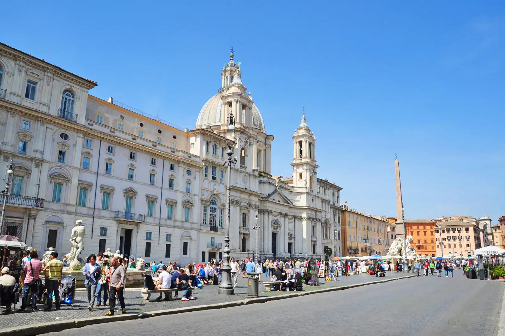
Plac w Rzymie położony w rione Parione.
Obiekt powstał z inicjatywy papieża Innocentego X na ruinach starożytnego stadionu Domicjana. Stadion został zbudowany na Polu Marsowym w roku 86. Przeznaczony był do rozgrywania konkurencji atletycznych typu greckiego – tak zwanych „agoni”. Jego rozmiary (54 × 276 m) zostały zachowane przy projektowaniu zabudowy placu. Fragmenty ruin stadionu (część trybun) są zachowane w piwnicach budynku w północnej części placu. Nazwa placu najprawdopodobniej pochodzi od zniekształconego wyrażenia in agone.
W roku 1477 papież Sykstus IV przeniósł tutaj z Kapitolu targ, który działał w tym miejscu do około 1867. Tradycja targu jest aktualnie podtrzymywana w grudniu w formie straganów z ozdobami i upominkami świątecznymi.
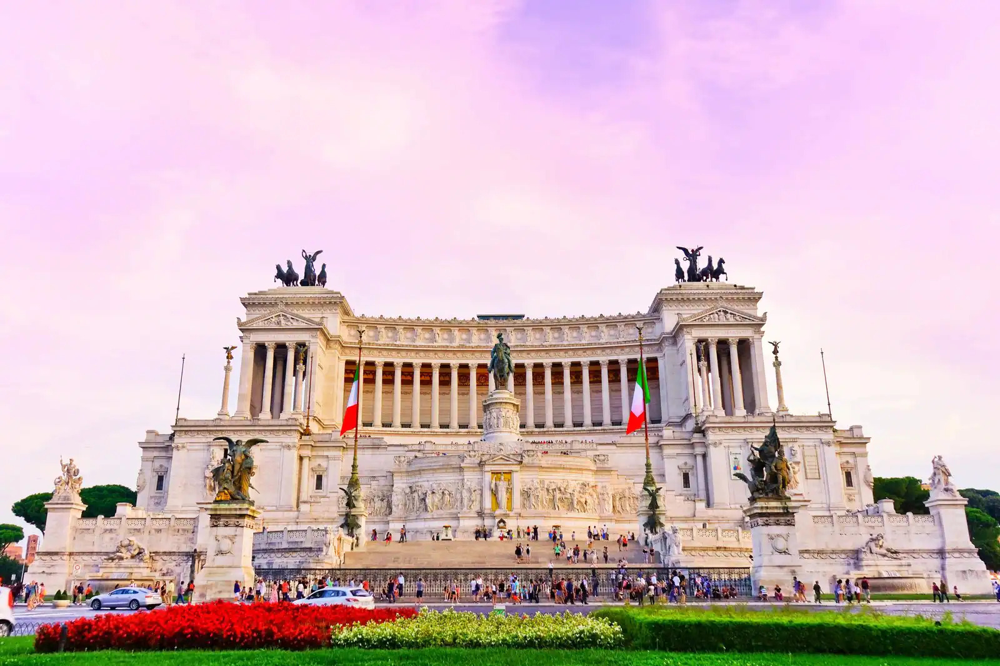
Piazza Venezia, czyli Plac Wenecki to jeden z głównych punktów orientacyjnych miasta skupiający wokół siebie wiele zabytków i stojący na styku licznych arterii komunikacyjnych. Słynie z umieszczonych przy nim pięciu budynków. Najważniejszy to Ołtarz Ojczyzny, czyli muzeum-pomnik, wybudowany by uczcić Zjednoczenie Włoch. Znajduje się tu Grób Nieznanego Żołnierza i muzeum. Na wprost wznosi się przepiękny Pałac Bonapartego, własność rodziny Napoleona.
Nazwa placu pochodzi od renesansowego Palazzo Venezia, dawniej pełniącego funkcję rezydencji papieskich i ambasady Republiki Weneckiej przy Państwie Kościelnym. Dziś mieści się tu muzeum z kolekcją dzieł zgromadzonych przez papieża Pawła II. Po przeciwnej stronie placu wznosi się wzorowany na Palazzo Venezia Budynek Towarzystwa Ubezpieczeniowego. Zaś obok stoi skromny kościół św. Marka z IV wieku z barokowo-renesansowym wnętrzem.
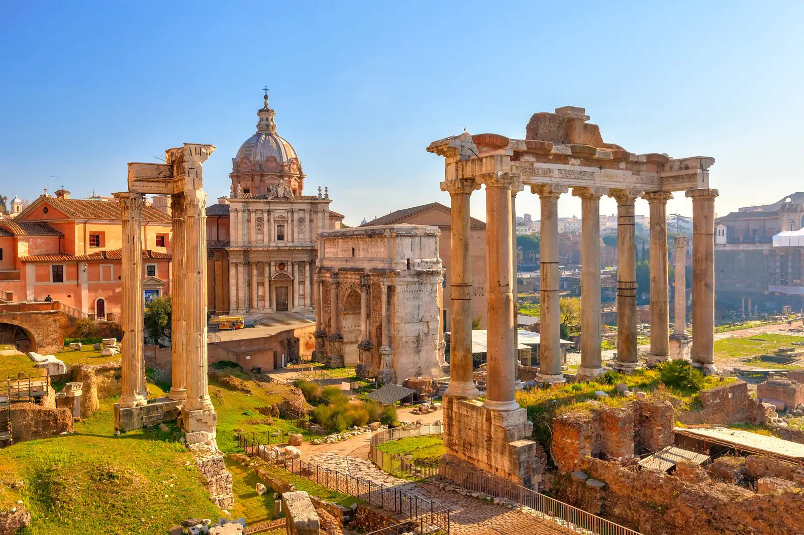
Najstarszy plac miejski w Rzymie, otoczony sześcioma z siedmiu wzgórz: Kapitolem, Palatynem, Celiusem, Eskwilinem, Wiminałem i Kwirynałem. Główny polityczny, religijny i towarzyski ośrodek starożytnego Rzymu, miejsce odbywania się najważniejszych uroczystości publicznych.
Tzw. teoria Gjerstada wypracowana w 1968 zakładała, że pierwotnie (w VII w. p.n.e.) na tym terenie znajdowała się osada składająca się z domów na palach. Po wybudowaniu kanału odwadniającego Cloaca Maxima, osuszeniu terenu, utwardzeniu powierzchni, obszar ten stał się miejscem zgromadzeń obywateli. Inicjatorem wybudowania forum miał być Tarkwiniusz Pyszny. Przy powstałym w VI w. p.n.e. placu miano potem wznieść szereg ważnych budynków: Kurię, mównicę (Rostra), świątynię Westy i dom westalek, świątynie Saturna, Dioskurów, Zgody i siedzibę najwyższego kapłana – budynek Regii, archiwum (Tabularium).
Ostatnie badania archeologiczne terenu forum przeprowadzone w latach osiemdziesiątych i dziewięćdziesiątych XX wieku zaprzeczyły teorii Gjerstada. Wykazano, że do trzeciej ćwierci VIII w. p.n.e. na terenie Forum Romanum znajdowało się zwykłe bagno zasilane potokiem płynącym wzdłuż późniejszej Via Sacra. Stanowiło ono naturalną granicę pomiędzy znajdującymi się na wzgórzach osadami, tzw. palatyńsko-eskwilińską i kapitolińsko-kwirynalską. Bagno osuszono, a powierzchnię utwardzono w latach dwudziestych VIII wieku p.n.e. (729-720 p.n.e.), co zgadza się w zasadzie z przekazanym przez rzymskich historyków czasem zjednoczenia Rzymu Romulusa z okoliczną osadą sabińską Tytusa Tacjusza. Przyjmuje się, że w tym właśnie okresie nastąpiło połączenie osady palatyńskiej z kwirynalską w jeden organizm polityczny, którego centrum stanowiło właśnie nowo osuszone Forum Romanum. Nigdy natomiast nie było tam domów na palach, jak twierdził Gjerstad.
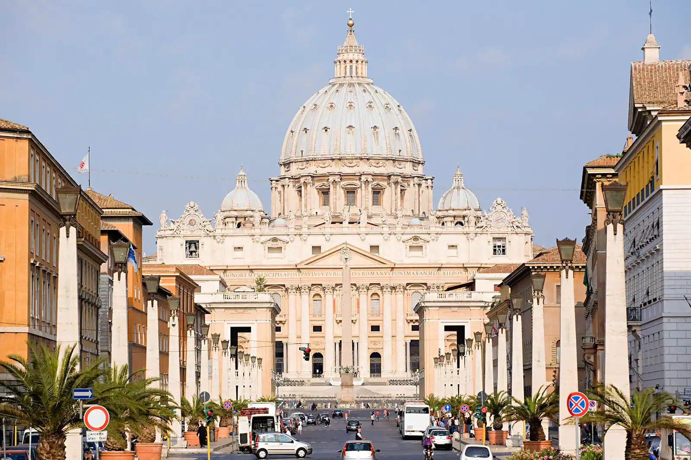
Rzymskokatolicka bazylika na Wzgórzu Watykańskim, zbudowana w latach 1506–1626, na miejscu starszej bazyliki wczesnochrześcijańskiej, fundacji cesarza Konstantyna Wielkiego, jedna z czterech bazylik większych Rzymu oraz jedna z wielu bazylik papieskich (dawniej patriarchalnych), sanktuarium, jeden z najważniejszych ośrodków pielgrzymkowych.
Wedle tradycji bazylika stoi na miejscu pochówku św. Piotra, uznawanego przez katolików za pierwszego papieża – jego grób leży pod głównym ołtarzem. Świątynia jest nekropolią papieży, w tym świętych m.in. Leona Wielkiego, Leona III, Grzegorza Wielkiego, Piusa X, Jana XXIII i Jana Pawła II. Miejsce obrad dwóch ostatnich soborów Kościoła katolickiego – Watykańskiego I i Watykańskiego II.
Czołowe dzieło architektury renesansu i baroku, z bardzo bogatym wystrojem wnętrza, gdzie znalazły się również zabytki pochodzące z dawnej konstantyńskiej bazyliki zbudowanej w tym miejscu (m.in. brązowa figura św. Piotra Arnolfa di Cambio). W okresie nowożytnym swoje dzieła sztuki wykonali tu Michał Anioł (Pieta Watykańska), Gianlorenzo Bernini (m.in. ołtarz świętego Piotra z baldachimem, Cathedra Petri, nagrobki papieży Aleksandra VII i Urbana VIII, figura św. Longinusa), Alessandro Algardi, Antonio Canova, Bertel Thorvaldsen.
Bazylika watykańska jest drugim co do wielkości kościołem na świecie (powierzchnia 23 000 m²; większą świątynią jest tylko bazylika Matki Bożej Królowej Pokoju w Jamusukro o powierzchni 30 000 m²) i jednym z najważniejszych świętych miejsc katolicyzmu. Usytuowana jest przy placu Świętego Piotra, do którego prowadzi z centrum Rzymu Via della Conciliazione.
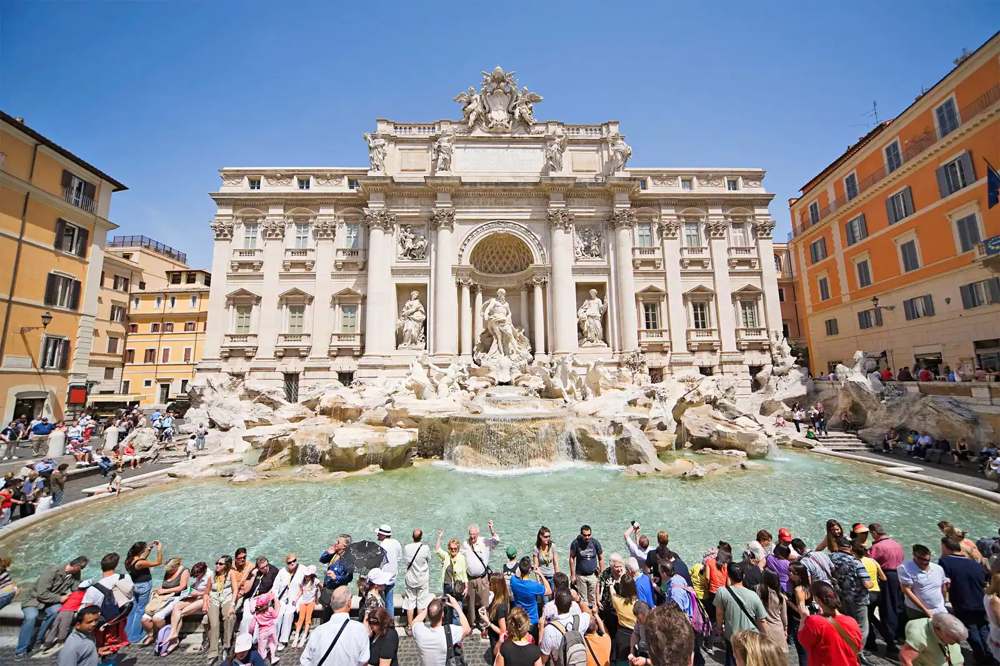
Najbardziej znana barokowa fontanna w Rzymie, w rione Trevi (R. II). Została zbudowana z inicjatywy Klemensa XII w miejscu istniejącej wcześniej fontanny zaprojektowanej przez Leona Battiste Albertiego z 1435 r. Zasila ją woda doprowadzona akweduktem zbudowanym w 19 r. p.n.e. przez Agrypę, tym samym, który zasila fontannę Barcaccia znajdującą się u podnóża Schodów Hiszpańskich.
W 1640 Urban VIII zainicjował dzieło przebudowy fontanny. Monumentalny projekt przedstawił Giovanni Lorenzo Bernini. Nie doszedł on jednak do skutku z powodu problemów finansowych dworu papieskiego.
Klemens XII w 1732 ogłosił konkurs na nową fontannę. Papież wybrał projekt Niccolo Salvi. Prace trwały od 1735 do 1776. Sam autor projektu nie dożył zakończenia budowy. Forma tej barokowej fontanny przypomina fasadę budynku, ma 20,0 m szerokości i 26,0 m wysokości. Centralnymi postaciami fontanny są Okeanos i dwa trytony, będące symbolami Kastora i Polluksa. Bóstwo oceanów znajduje się na rydwanie zaprzężonym w dwa hippokampy (hybrydy konia i ryby), z których jeden jest spokojny, prowadzony przez trytona z prawej strony, tryton z lewej strony natomiast stara się okiełznać niespokojnego konia. Symbolizują one dwa odmienne stany morza (cisza i sztorm). Cztery statuy umieszczone na balustradzie symbolizują cztery pory roku (są to dzieła Corsiniego, Ludovisiego, Pincellottiego i Queirolego). W sąsiednich niszach znajdują się kobiece postaci będące alegoriami Zdrowia (po prawej) i Obfitości (po lewej).
Legenda wiąże nazwę fontanny z imieniem Trevia noszonym przez dziewicę (łac. virgo), która odkryła źródło wody wykorzystane przy budowie akweduktu. Wodę doprowadzaną przez ten akwedukt do fontanny nazywa się Acqua Virgo.
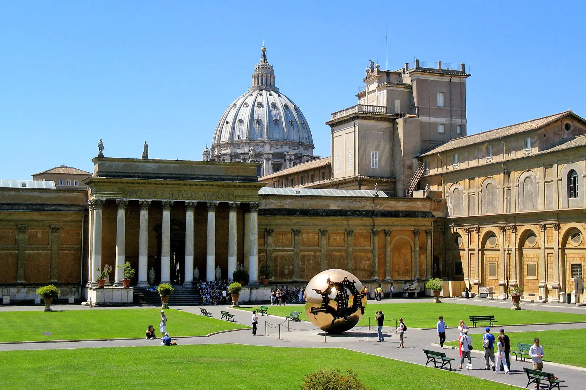
Muzea publiczne Państwa Watykańskiego, powstałe ze zbiorów dzieł sztuki zgromadzonych przez poszczególnych papieży. Początki kolekcji związane są z kolekcją dzieł zgromadzonych przez Sykstusa IV i Juliusza II. Powiększone podczas pontyfikatów kolejnych papieży. Udostępnione publiczności już w 1787 roku w celu pogłębienia znajomości sztuki i kultury. Są jednym z najczęściej odwiedzanych muzeów świata.
Muzea Watykańskie wywodzą swoje początki z odkrycia 14 stycznia 1506 roku w winnicy niedaleko bazyliki Santa Maria Maggiore w Rzymie antycznej rzeźby Grupy Laokoona, którą zakupił Papież Juliusz II od właściciela winnicy, za rekomendacją Giuliano da Sangallo i Michała Anioła, którzy pracowali w tym czasie dla papieża i zostali wysłani by zbadać to odkrycie. Po zakupie rzeźby papież nakazał umieścić ją na wystawie publicznej w Watykanie dokładnie miesiąc po jej odkryciu. W tym samym roku papież przeniósł swoją prywatną kolekcje rzeźb na dziedziniec oktagonalny. Równocześnie trwała budowa, zaprojektowanego przez Donato Bramante, dziedzińca belwederskiego, wokół którego przez następne stulecia rozbudowywano kolejne części muzeów. Jeszcze za panowania Juliusza II doszło do zakupu kolejnej rzeźby która z czasem nabrała statusu jednego z najcenniejszych dzieł w kolekcji muzeów - pochodzącej najprawdopodobniej z II wieku n.e. rzeźby przedstawiającej Apollina, która ze względu na jej ustawienie w krużganku dziedzińca (obok grupy Laokoona) zyskała sławę jako Apollo Belwederski.
Zbiory dzieł sztuki sukcesywnie powiększały się nawet pomimo katastrofalnego w skutkach dla miasta złupienia w 1527 roku. Pomiędzy 1530, a 1536 rokiem do zbiorów dołączono Tors Belwederski, który dla renesansowych artystów, szczególnie Michała Anioła był źródłem inspiracji, pomimo uszkodzenia rzeźby w znacznej części.
Muzea otwarto oficjalnie w roku 1757 za pontyfikatu papieża Benedykta XIV jako Museum Christianum.
Legenda:
| Awans do 1/8 Finału |
| Odpadnięcie z turnieju |
| Zespół | Pkt | M | W | R | P | Br+ | Br− | +/− |
|---|---|---|---|---|---|---|---|---|
| 9 | 3 | 3 | 0 | 0 | 7 | 0 | +7 | |
| 4 | 3 | 1 | 1 | 1 | 3 | 2 | +1 | |
| 4 | 3 | 1 | 1 | 1 | 4 | 5 | -1 | |
| 0 | 3 | 0 | 0 | 3 | 1 | 8 | -7 |
| Zespół | Pkt | M | W | R | P | Br+ | Br− | +/− |
|---|---|---|---|---|---|---|---|---|
| 9 | 3 | 3 | 0 | 0 | 7 | 1 | +6 | |
| 3 | 3 | 1 | 0 | 2 | 5 | 4 | +1 | |
| 3 | 3 | 1 | 0 | 2 | 1 | 3 | -2 | |
| 3 | 3 | 1 | 0 | 2 | 2 | 7 | -5 |
| Zespół | Pkt | M | W | R | P | Br+ | Br− | +/− |
|---|---|---|---|---|---|---|---|---|
| 9 | 3 | 3 | 0 | 0 | 8 | 2 | +6 | |
| 6 | 3 | 2 | 0 | 1 | 4 | 3 | +1 | |
| 3 | 3 | 1 | 0 | 2 | 4 | 5 | -1 | |
| 0 | 3 | 0 | 0 | 3 | 2 | 8 | -6 |
| Zespół | Pkt | M | W | R | P | Br+ | Br− | +/− |
|---|---|---|---|---|---|---|---|---|
| 7 | 3 | 2 | 1 | 0 | 2 | 0 | +2 | |
| 4 | 3 | 1 | 1 | 1 | 4 | 3 | +1 | |
| 4 | 3 | 1 | 1 | 1 | 3 | 2 | +1 | |
| 1 | 3 | 0 | 1 | 2 | 1 | 5 | -4 |
| Zespół | Pkt | M | W | R | P | Br+ | Br− | +/− |
|---|---|---|---|---|---|---|---|---|
| 7 | 3 | 2 | 1 | 0 | 4 | 2 | +2 | |
| 5 | 3 | 1 | 2 | 0 | 6 | 1 | +5 | |
| 3 | 3 | 1 | 0 | 2 | 2 | 7 | -5 | |
| 1 | 3 | 0 | 1 | 2 | 4 | 6 | -2 |
| Zespół | Pkt | M | W | R | P | Br+ | Br− | +/− |
|---|---|---|---|---|---|---|---|---|
| 5 | 3 | 1 | 2 | 0 | 4 | 3 | +1 | |
| 4 | 3 | 1 | 1 | 1 | 6 | 5 | +1 | |
| 4 | 3 | 1 | 1 | 1 | 7 | 6 | +1 | |
| 2 | 3 | 0 | 2 | 1 | 3 | 6 | -3 |